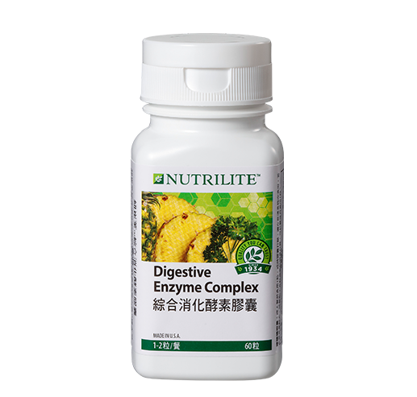

<div class="product_detail_content">
    <div class="picture">
        <div id="owl-demo" class="owl-carousel owl-theme">
            <div class="item"><span class="volume">60粒
</span></div>
        </div>
    </div>
    <div class="infomation">
        <h3>綜合消化酵素膠囊<br><span class="small">獨特9種天然酵素，消化輕鬆零負擔</span></h3>
        <p>刺激性飲食、工作壓力讓腸道不正常蠕動，影響消化，甚至脹氣，本產品獨家9種天然酵素，幫助維持消化道機能，腸道好，人自然就健康！</p>
        <h4>產品特色</h4>
        <ul class="list_dot">
            <li>獨特9種天然酵素超強配方，一次完整補充</li>
            <li>全方位消化酵素群</li>
            <li>獨特科技保留高效酵素活性</li>
            <li>添加紐崔萊螺旋藻與歐芹蔬果菁華，元氣加倍</li>
            <li>來自天然，食用最安心</li>
        </ul>
        <!-- <a class="download" href="pdf/products_digestive_enzyme_complex.pdf" target="_blank">營養成分PDF</a> -->
        <div class="btnWrap">
            <div class="showDetail">營養成分</div>
            <a class="download" href="pdf/products_digestive_enzyme_complex.pdf" target="_blank">下載PDF</a>
        </div>
        <div class="detailTable">
            <table class="tableizer-table">
                <thead>
                    <tr class="tableizer-firstrow">
                        <th>重要營養成分</th>
                        <th>每粒含</th>
                    </tr>
                </thead>
                <tbody>
                    <tr>
                        <td>綜合消化酵素</td>
                        <td>302毫克</td>
                    </tr>
                    <tr>
                        <td>&nbsp;&nbsp;蛋白酵素類： 含鳳梨酵素、胜肽酵素、蛋白質分解酵素</td>
                        <td>&nbsp;</td>
                    </tr>
                    <tr>
                        <td>&nbsp;&nbsp;醣解酵素類： 含轉化酵素、澱粉酵素、纖維素酵素、澱粉葡萄糖化酵素、乳糖酵素</td>
                        <td>&nbsp;</td>
                    </tr>
                    <tr>
                        <td>&nbsp;&nbsp;脂解酵素類： 含脂解酵素</td>
                        <td>&nbsp;</td>
                    </tr>
                    <tr>
                        <td>螺旋藻粉</td>
                        <td>17 毫克</td>
                    </tr>
                    <tr>
                        <td>歐芹濃縮素</td>
                        <td>16 毫克</td>
                    </tr>
                </tbody>
            </table>
        </div>
    </div>
</div>
